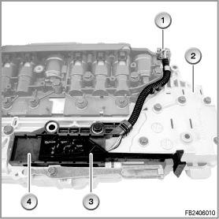
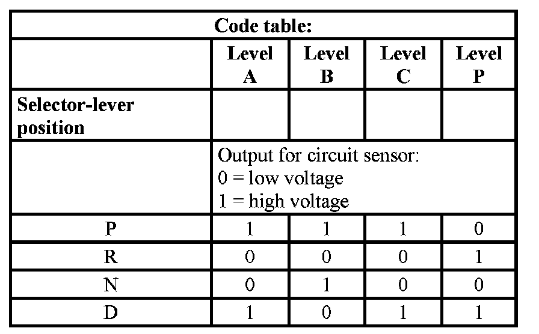

Gear Position Sensor
Transmission position sensor
The transmission position sensor is a no-contact Hall sensor. The transmission position sensor is attached to the hydraulic unit (hydraulic selector unit).
Brief description of components
The 5 inputs of the transmission position sensor show each selector-lever position. The selector-lever position is transferred to the transmission position sensor across a Bowden cable and is converted by the transmission position sensor into a code. This code is transferred to the transmission control and engine management system.
The transmission position sensor is connected via a wiring harness and a connector with the mechatronics module and is supplied with a voltage of 8.3 - 9.3 V.

Index Explanation
1 Connector
2 Hydraulic unit
3 Transmission position sensor
4 Slide of the transmission position sensor
System functions
The following system functions are described:
Gearshift diagram for the transmission position sensor

Notes for Service department
General information
The transmission position sensor with wiring harness and connector can be replaced separately.
Diagnosis instructions
Relevant faults, transmission position sensor
In the corresponding test module, the following faults are treated:
- 5658 transmission position sensor: failure
- 5667 transmission position sensor: A low
No liability can be accepted for printing or other faults. Subject to changes of a technical nature